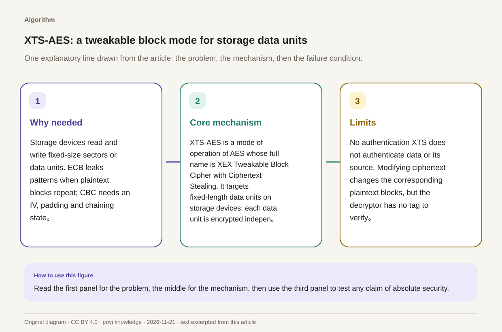
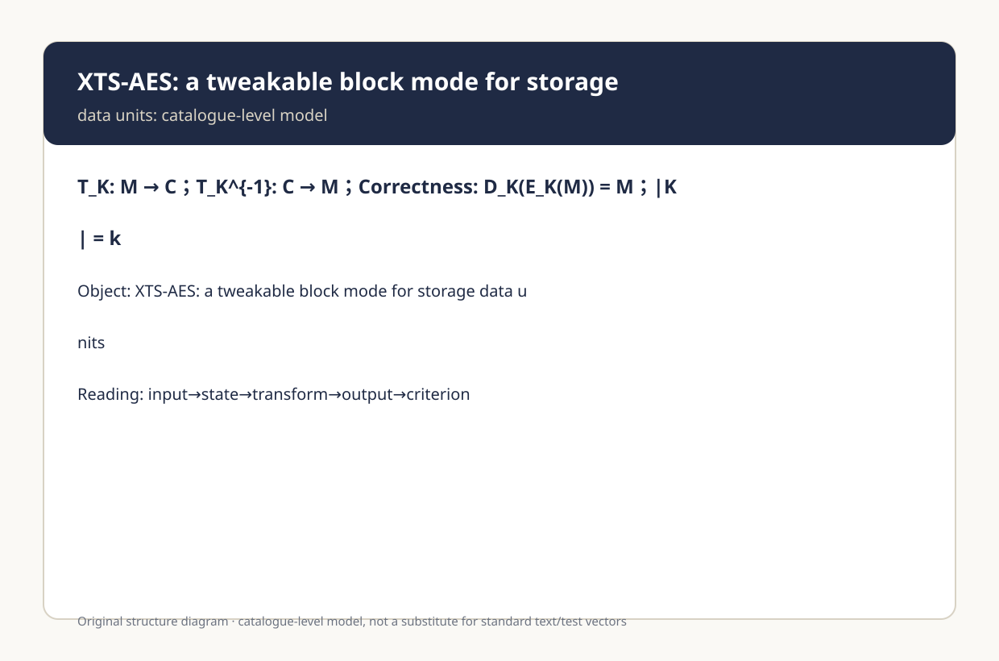

Principles
Algorithm: XTS (XTS 磁盘加密模式). XTS-AES is a mode of operation of AES whose full name is XEX Tweakable Block Cipher with Ciphertext Stealing. It targets fixed-length data units on storage devices: each data unit is encrypted independently; the tweak is typically set to the data-unit index or position, so the same plaintext at different positions yields different ciphertext. XTS is not designed for network transport and does not provide authentication. XTS-AES uses two AES keys: K1 processes data blocks and K2 processes the tweak. For a 128-bit tweak i, compute T = E_K2(i); the tweak for block j is T_j = alpha^j * T, where multiplication is in GF(2^128) modulo x^128 + x^7 + x^2 + x + 1. Each block is encrypted with XEX:
C_j = E_K1(P_j xor T_j) xor T_j
Decryption uses the same tweak sequence and the inverse function:
P_j = D_K1(C_j xor T_j) xor T_j
The XTS-AES-128 key is 256 bits, consisting of two 128-bit AES keys; the XTS-AES-256 key is 512 bits, consisting of two 256-bit AES keys. A data unit must not exceed 2^20 AES blocks. When a data unit is not a multiple of 128 bits, XTS uses ciphertext stealing. Let the plaintext consist of complete blocks P_0 ... P_(m-1) followed by one non-empty partial block P_m. First compute a complete intermediate block for the last complete block and take its first s bits as the partial ciphertext C_m; then form a complete block from P_m plus the discarded bits and encrypt it as C_(m-1). The ciphertext is the same length as the plaintext, with no padding block. The standard allows the last complete block and the partial block to be swapped in physical storage, provided the interface restores the logical order.

Why it matters
Storage devices read and write fixed-size sectors or data units. ECB leaks patterns when plaintext blocks repeat; CBC needs an IV, padding and chaining state, and a change in one unit can affect later units. XTS typically uses the data-unit index as the tweak, distinguishing positions, and uses ciphertext stealing to avoid expansion, which suits in-place encryption and random access.
XTS is designed for confidentiality only. It deliberately omits an authentication tag because the design goal is no data expansion, and a tagged scheme would defeat that goal. SP 800-38E notes that, in the absence of authentication or access control, XTS provides more protection than the other approved confidentiality-only modes against unauthorized manipulation of encrypted data, but that is not integrity protection.
XTS therefore fits disks and block devices, not network protocols that need authentication. Detecting tampering, replay or relocation of data units requires access control, an upper-layer integrity mechanism or AEAD; XTS being harder to manipulate than ECB/CBC must not be read as XTS providing authentication.
Applications
XTS-AES targets storage devices that use fixed-length data units. IEEE 1619-2007 specifies XTS-AES, and NIST SP 800-38E approved the mode by reference in 2010 with an added requirement that a data unit not exceed 2^20 AES blocks. NIST CAVP XTS files provide XTS-AES-128 and XTS-AES-256 encryption/decryption vectors, including data units of 128, 256, 130 and 200 bits.
The typical setting is in-place encryption of disks, block devices and storage arrays. It is not a transport mode: SP 800-38E explicitly says XTS-AES was not designed for encrypting data in transit. Transport that needs authentication should use AEAD.
The example in this article uses COUNT 101 from CAVP XTSGenAES128.rsp: a 256-bit data unit, a 128-bit tweak and XTS-AES-128. It also demonstrates a byte-aligned ciphertext-stealing round trip on a 39-byte data unit.

Limits & attacks
XTS does not authenticate data or its source. Modifying ciphertext changes the corresponding plaintext blocks, but the decryptor has no tag to verify; XTS alone cannot detect tampering. It also does not prevent replay or relocation of data units unless the tweak, position and access control are used together.
Under the same key, different data units should use different tweaks. If two data units use the same key and the same tweak, the determinism of XEX means their ciphertext XOR relation leaks the plaintext XOR relation. SP 800-38E also stresses that key management is important for XTS-AES and states that the XML representation of a key-backup structure is outside the scope of that recommendation.
SP 800-38E requires a data unit not to exceed 2^20 AES blocks. This is a conformance requirement, not an optional performance suggestion; a larger data unit changes the security boundary, and the fact that an implementation runs is not a justification to bypass it.
XTS does not defend against side channels or physical access. Storage devices can face cold boot, bus probing, replay and offline modification; XTS protects only the confidentiality of data content, while access control and upper-layer protocols cover the rest.
This article's teaching implementation demonstrates XTS-AES-128 fixed vectors, a byte-aligned ciphertext-stealing round trip, tweak sensitivity and a tamper check only. It does not generate keys or tweaks, compare in constant time, manage keys, map storage, run a protocol state machine or defend against side channels, and must not be used in production.
History
XTS builds on XEX (XOR-Encrypt-XOR), a tweakable block cipher proposed by Rogaway in 2004, and adds ciphertext stealing to support data units that are not a whole number of blocks. The IEEE storage working group specified XTS-AES in IEEE 1619-2007; NIST approved the mode by reference in SP 800-38E in 2010 and added the data-unit length requirement.
CAVP later supplied XTS-AES validation tests and response files covering both key sizes and several data-unit lengths. XTS thus became a standardized storage-encryption mode, but its no-expansion, no-authentication design also means it solves confidentiality only and cannot replace a complete storage-security design.
Worked example & verification
Worked example
Take one published or standard test vector, record the input, the ordered steps and the byte-exact output, then compare with an independent implementation. Where no citable numeric vector is available, the entry records only structural steps and does not invent an output.
References
- Wikipedia search entry for XTS 磁盘加密模式. https://zh.wikipedia.org/w/index.php?search=XTS%20%E7%A3%81%E7%9B%98%E5%8A%A0%E5%AF%86%E6%A8%A1%E5%BC%8F
- Handbook of Applied Cryptography (Menezes, van Oorschot, Vanstone). https://www.cacr.math.uwaterloo.ca/hac/